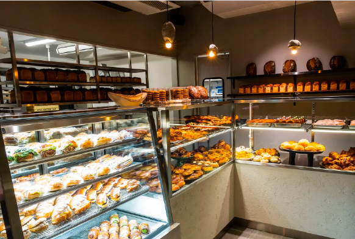
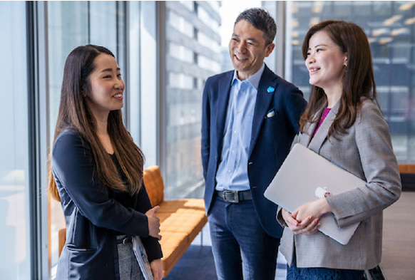
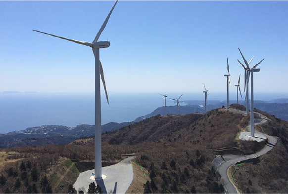

SDGsトレンド一覧
SDGsの基礎知識を詳しく解説し、最新情報や私たちにできることをわかりやすくご紹介します。
生態系を脅かす外来種問題

妊産婦の死亡率や医療格差などの現状について
伝染病とは？感染症との違いや原因・歴史についても解説
SDGsに関わりの深いインフラとは？意味や重要性をわかりやすく紹介
いじめ問題とは。その原因や対策を知り、いじめのない学校や社会を目指そう
温室効果ガスによる問題と解決へ向けた世界での取り組み

スラムとは？世界の現状と解決策、SDGs目標11との関係も解説
密漁の問題とは？密漁の現状と防止対策について

LGBTQとは？Ｑの意味や性的マイノリティの状況まで徹底解説
太陽光発電の仕組みや課題、世界の現状について解説
ウェルビーイングとは？SDGsとの関係や企業の取り組み事例も解説
アップサイクルとは？リサイクルやリメイクとの違いやアイデアを紹介
リカレント教育の意味やメリットを分かりやすく解説。リスキング・生涯学習との違いや日本の現状・具体例とは
風力発電の仕組みや現状、メリット・デメリットについて解説します
フードマイレージとは？日本の現状と減らすための取り組みをわかりやすく解説！
移民問題とは？増える移民の現状と各国の政策
スマートシティとは？日本の自治体の取り組みや海外の事例も紹介
災害とは？災害に強いまちづくりと私たちにもできること
地熱発電の仕組みと課題、日本と世界の現状について
ヘイトクライムとは？SDGs目標10との関係、差別をなくすための取り組みを解説
環境ラベルとは？表示の意味と種類について解説します
障がい者とSDGsの関係とは？何番の目標が当てはまる？課題と取り組みを紹介
失業率の問題とは？現状と問題解決に向けた取り組み、SDGs目標8との関係も解説
MDGsとは？SDGsとの違いは何？わかりやすく簡単に解説！